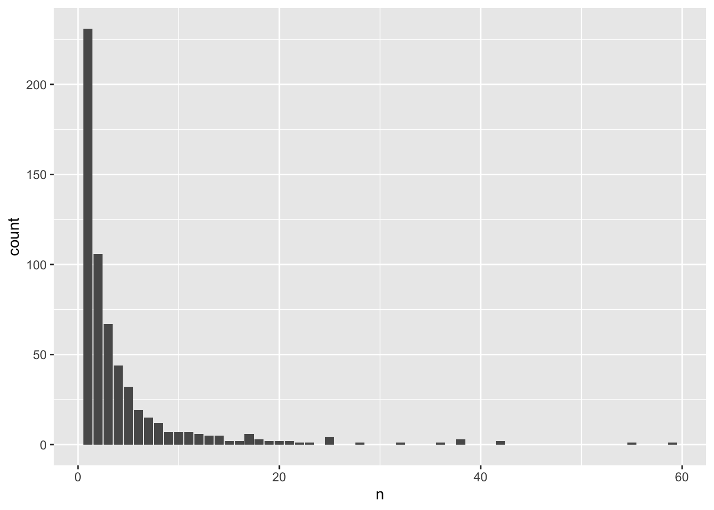

6 Variant annotation
6.1 Using Bioconductor annotation resources
In this example, we illustrate defining aggregate units based on known genes.
First, we load the null mixed model and open the GDS file.
modfile <- "data/null_mixed_model.rds"
nullmod <- readRDS(modfile)
sampfile <- "data/sample_phenotype_annotation.rds"
annot <- readRDS(sampfile)
gdsfile <- "data/1KG_phase3_subset_chr1.gds"
library(SeqVarTools)## Loading required package: SeqArray## Loading required package: gdsfmtWe use the human genome annotation from Bioconductor to identify genes.
## Loading required package: BiocGenerics## Loading required package: generics##
## Attaching package: 'generics'## The following objects are masked from 'package:base':
##
## as.difftime, as.factor, as.ordered, intersect, is.element, setdiff,
## setequal, union##
## Attaching package: 'BiocGenerics'## The following objects are masked from 'package:stats':
##
## IQR, mad, sd, var, xtabs## The following objects are masked from 'package:base':
##
## anyDuplicated, aperm, append, as.data.frame, basename, cbind,
## colnames, dirname, do.call, duplicated, eval, evalq, Filter, Find,
## get, grep, grepl, is.unsorted, lapply, Map, mapply, match, mget,
## order, paste, pmax, pmax.int, pmin, pmin.int, Position, rank,
## rbind, Reduce, rownames, sapply, saveRDS, table, tapply, unique,
## unsplit, which.max, which.min## Loading required package: S4Vectors## Loading required package: stats4##
## Attaching package: 'S4Vectors'## The following object is masked from 'package:utils':
##
## findMatches## The following objects are masked from 'package:base':
##
## expand.grid, I, unname## Loading required package: IRanges## Loading required package: Seqinfo## Loading required package: GenomicFeatures## Loading required package: AnnotationDbi## Loading required package: Biobase## Welcome to Bioconductor
##
## Vignettes contain introductory material; view with
## 'browseVignettes()'. To cite Bioconductor, see
## 'citation("Biobase")', and for packages 'citation("pkgname")'.## GRanges object with 1120 ranges and 0 metadata columns:
## seqnames ranges strand
## <Rle> <IRanges> <Rle>
## 1 1 970546 *
## 2 1 985900 *
## 3 1 1025045 *
## 4 1 1265550 *
## 5 1 1472676 *
## ... ... ... ...
## 1116 1 248715186 *
## 1117 1 248715606-248715610 *
## 1118 1 248761613 *
## 1119 1 248894546 *
## 1120 1 249149558 *
## -------
## seqinfo: 1 sequence from an unspecified genome; no seqlengths# find variants that overlap with each gene
txdb <- TxDb.Hsapiens.UCSC.hg19.knownGene
gr <- renameSeqlevels(gr, paste0("chr", seqlevels(gr)))
ts <- transcriptsByOverlaps(txdb, gr, columns="GENEID")
# simplistic example - define genes as overlapping transcripts
genes <- reduce(ts)
genes <- renameSeqlevels(genes, sub("chr", "", seqlevels(genes)))
genes## GRanges object with 628 ranges and 0 metadata columns:
## seqnames ranges strand
## <Rle> <IRanges> <Rle>
## [1] 1 955500-991499 +
## [2] 1 2158827-2241652 +
## [3] 1 2985732-3355185 +
## [4] 1 4036193-4153122 +
## [5] 1 4631541-4654076 +
## ... ... ... ...
## [624] 1 246935139-247002913 -
## [625] 1 247108849-247242038 -
## [626] 1 247460714-247495169 -
## [627] 1 248647546-248806275 -
## [628] 1 249144205-249153284 -
## -------
## seqinfo: 298 sequences (2 circular) from hg19 genomeWe run a burden test, setting a maximum alternate allele frequency to exclude common variants.
library(GENESIS)
# create an iterator where each successive unit is a different gene
iterator <- SeqVarRangeIterator(seqData, variantRanges=genes, verbose=FALSE)
# do a burden test on the rare variants in each gene
assoc <- assocTestAggregate(iterator, nullmod, AF.max=0.05, test="Burden")## # of selected samples: 100## Using 8 CPU cores## n.site n.alt n.sample.alt Score Score.SE Score.Stat Score.pval
## 1 2 12 12 -0.307814558 0.26357660 -1.1678372 0.24287243
## 2 1 1 1 0.024908204 0.07345671 0.3390868 0.73454432
## 3 1 2 2 0.200506079 0.11801693 1.6989604 0.08932665
## 4 1 6 6 -0.106628030 0.17547492 -0.6076540 0.54341700
## 5 0 0 0 NA NA NA NA
## 6 2 4 4 -0.005743665 0.16583076 -0.0346357 0.97237023
## Est Est.SE PVE
## 1 -4.4307319 3.793964 1.515382e-02
## 2 4.6161448 13.613460 1.277554e-03
## 3 14.3959044 8.473361 3.207185e-02
## 4 -3.4629107 5.698820 4.102704e-03
## 5 NA NA NA
## 6 -0.2088617 6.030244 1.332924e-05## [[1]]
## variant.id chr pos allele.index n.obs freq MAC weight
## 1 1 1 970546 1 100 0.015 3 1
## 2 2 1 985900 1 100 0.045 9 1
##
## [[2]]
## variant.id chr pos allele.index n.obs freq MAC weight
## 1 7 1 2185887 1 100 0.005 1 1
##
## [[3]]
## variant.id chr pos allele.index n.obs freq MAC weight
## 2 15 1 3293503 1 100 0.01 2 1
##
## [[4]]
## variant.id chr pos allele.index n.obs freq MAC weight
## 1 19 1 4054245 1 100 0.03 6 1
##
## [[5]]
## [1] variant.id chr pos allele.index n.obs
## [6] freq MAC weight
## <0 rows> (or 0-length row.names)
##
## [[6]]
## variant.id chr pos allele.index n.obs freq MAC weight
## 1 36 1 6489967 1 100 0.01 2 1
## 2 37 1 6503405 1 100 0.01 2 16.2 Aggregating and filtering variants using annotation
Alternatively, we may want to import annotation from other software, such as ANNOVAR or WGSA. The output formats of variant annotation software can be quite complex, but for this exercise we use fairly simple tab-separated text files.
##
## Attaching package: 'dplyr'## The following object is masked from 'package:AnnotationDbi':
##
## select## The following object is masked from 'package:Biobase':
##
## combine## The following objects are masked from 'package:GenomicRanges':
##
## intersect, setdiff, union## The following object is masked from 'package:Seqinfo':
##
## intersect## The following objects are masked from 'package:IRanges':
##
## collapse, desc, intersect, setdiff, slice, union## The following objects are masked from 'package:S4Vectors':
##
## first, intersect, rename, setdiff, setequal, union## The following objects are masked from 'package:BiocGenerics':
##
## combine, intersect, setdiff, setequal, union## The following object is masked from 'package:generics':
##
## explain## The following objects are masked from 'package:stats':
##
## filter, lag## The following objects are masked from 'package:base':
##
## intersect, setdiff, setequal, unionsnv_annotation <- read.table("data/snv_parsed.tsv", sep="\t", na.strings=".", header=TRUE, as.is=TRUE)
indel_annotation <- read.table("data/indel_parsed.tsv", sep="\t", na.strings=".", header=TRUE, as.is=TRUE)
combined_annotation <- bind_rows(snv_annotation, indel_annotation)Here we remove variants that are not associated with a gene, group the variants by gene, and filter the variants for intron_variants with a CADD_phred score greater than 3 in just a few lines of code:
combined_annotation %>%
filter(VEP_ensembl_Gene_ID != ".") %>% # remove variants not annotated with a Gene_ID
group_by(VEP_ensembl_Gene_ID) %>% # aggregate by gene
filter(CADD_phred > 3) %>% # filter variants to keep only CADD_phred greater than 3
filter(stringr::str_detect(VEP_ensembl_Consequence, "intron_variant")) %>% # keep intron variants
glimpse() # view the result - 592 variants## Rows: 592
## Columns: 7
## Groups: VEP_ensembl_Gene_ID [170]
## $ CHROM <int> 22, 22, 22, 22, 22, 22, 22, 22, 22, 22, 22, 22…
## $ POS <int> 15699830, 15699830, 16437047, 16445862, 168137…
## $ REF <chr> "G", "G", "G", "C", "C", "G", "G", "G", "G", "…
## $ ALT <chr> "A", "A", "A", "A", "T", "A", "A", "A", "A", "…
## $ VEP_ensembl_Gene_ID <chr> "ENSG00000198062", "ENSG00000198062", "ENSG000…
## $ VEP_ensembl_Consequence <chr> "intron_variant,NMD_transcript_variant", "intr…
## $ CADD_phred <dbl> 3.612, 3.612, 9.729, 3.895, 7.530, 5.332, 5.33…Now that you’ve got a set of variants that you can aggregate into genic units, the data needs to be reformatted for input to the GENESIS analysis pipeline. The input to the GENESIS pipeline is a data frame with variables called group_id, chr, pos, ref, and alt. Prepare this data frame and save it for testing (You do not need to filter the variants for this exercise):
aggregates <-
combined_annotation %>%
filter(VEP_ensembl_Gene_ID != ".") %>% # remove variants not annotated with a Gene_ID
group_by(VEP_ensembl_Gene_ID) %>% # aggregate by gene
dplyr::select(group_id = VEP_ensembl_Gene_ID,
chr = CHROM,
pos = POS,
ref = REF,
alt = ALT) %>%
glimpse # inspect the tibble## Rows: 2,603
## Columns: 5
## Groups: group_id [598]
## $ group_id <chr> "ENSG00000230643", "ENSG00000226474", "ENSG00000231565", "ENS…
## $ chr <int> 22, 22, 22, 22, 22, 22, 22, 22, 22, 22, 22, 22, 22, 22, 22, 2…
## $ pos <int> 15589963, 15613723, 15613723, 15628559, 15699830, 15699830, 1…
## $ ref <chr> "G", "A", "A", "C", "G", "G", "G", "G", "G", "G", "G", "G", "…
## $ alt <chr> "T", "G", "G", "T", "A", "A", "A", "A", "T", "T", "T", "T", "…You can also compute some summary information about these aggregates, such as counting how many genic units we’re using:
## [1] 598We can look at the distribution of the number of variants per aggregation unit:
library(ggplot2)
counts <- aggregates %>% group_by(group_id) %>% summarize(n = n())
ggplot(counts, aes(x = n)) + geom_bar()